War is at once a summary and a museum...its own. Paul Virilio, “Bunker Archeology”
Introduction
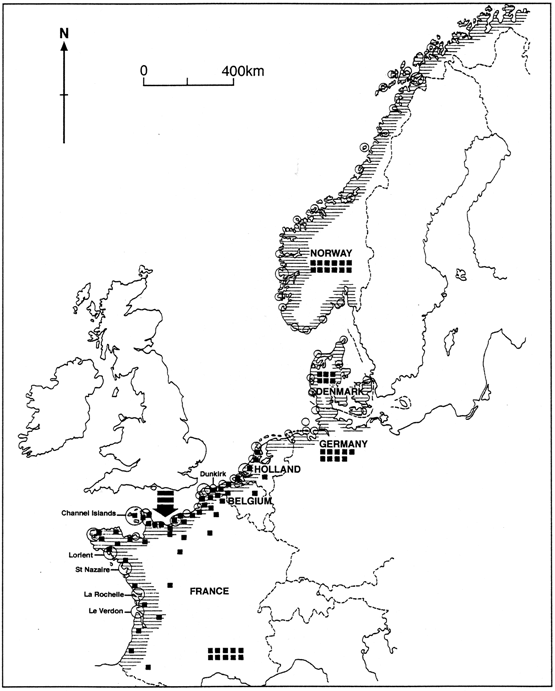
Map showing fortified areas (circled) that together formed the Atlantic Wall (shaded), stretching some
2685 km from the North Cape of Norway to the border of France with Spain. Rose et al. (2002)
A chain of enigmatic concrete constructions invisibly encircles the northern coast of Europe and delving inland,
fossilizates, keeping secrets of the forgotten past. Most of them rest between spiky bushes, verdant, buried under
layers of sand and soil. These alien-looking objects are the vestiges of the Atlantic Wall, a gigantic defence
system of fortifications and bunkers stretching from Norway to the Franco-Spanish border (P. Harff, D. Harff;
2004). Erected by the Nazi German army during World War II, it served as a formidable bulwark against Allied
invasion (Ibid.). For citizens of countries overtaken by the Nazis, the wall is connected to a stigma of seizure,
surrender, dependency, and humiliation—a spatial intervention that constantly reminds of the once-lost freedom.
The Atlantic Wall is a symbol of the unwanted past, still so close to the skin that it is difficult to disconnect
from the trauma it caused, to critically look at it and engage (Bunkermuseum Vlieland). In the Netherlands, people
who witnessed the erection of the Wall are still alive, and their descendants have inherited the embodied memory
(Statistics Netherlands (CBS); Rachel Yehuda, Amy Lehrner, 2018; BBC News. 2019. ‘The Long Echo of WW2 Trauma’, 7
June 2019). However, there is no widespread awareness among the Dutch about this construction of monumental size
and meaning. The government does not put effort into preserving its memory (AFP, 2017). The tragedy's skeletal
remains buried in sand, like relics of a giant whale slowly being washed away back into the ocean.
This displays the indifference towards the topic of conflict, that has been and still is present in Dutch
society. While witnessing a multitude of crises unfolding elsewhere, it is easy to overlook the roles that
indirectly involved countries play and the responsibilities they bear. European land is free from the active
presence of warfare, but the scars of history remain as abandoned, dilapidated concrete constructions scattered
across the landscape.
These silent concrete walls are the only physical representations of the traumatic events in Dutch history that I
could find here in the Netherlands. I was in The Hague during the outbreak of war in Ukraine on the 24th of
February in 2022. When it just began, I felt like my life split into before and after. It felt like everything was
up in the air, and I was desperately looking for something to ground myself. Coming from Russia, I am used to
seeing signs of war everywhere: in memorials, city banners, street names, promotion of military commemoration
dates, stickers on the cars, and school performances. The idea of military supremacy is at the core of the
government propaganda narrative (Fedor Krasheninnikov, 2017). Being used to the embodied violence ingrained in the
landscape, here, in the polished, peaceful, perfectly designed country of the Netherlands, I struggled to
comprehend the reality beyond its borders. But the discovery of the Atlantic Wall allowed me to get closer to the
pain rooted in this soil.
This leads to the question: how does the architecture of memory work? And how does the relationship of the state
and society to collective memory influence the treatment of architecture and the shaping of the landscape?
Myth of the Atlantic
«Now Iapetus took to wife the neat-ankled maid Clymene, daughter of Ocean, and went up with her into
one bed. And she bore him a stout-hearted son, Atlas: [510] also she bore very glorious Menoetius and clever
Prometheus, full of various wiles […]. And Atlas through hard constraint upholds the wide heaven with unwearying
head and arms, standing at the borders of the earth before the clear-voiced Hesperides; [520] for this lot wise Zeus
assigned to him.» – Hesiod, Theogony, 700BC.
The Atlantic Ocean spans between the North and South Americas, Africa, and washes the western coast of Fortress
Europe. Here, nestled within its waters, lies Holland, currently known as The Netherlands, meaning «the lower
land» (Online Etymology Dictionary, accessed
in 2024). A country that has been fighting with the element of water from time immemorial (Pytheas of Massilia,
c.325 BCE). The country’s entire existence is dependant on its flood defence structures in order to keep afloat
and over the sea level, and in its absence or failure 60% of the Dutch land would be covered by the North Sea
(Ronny Vergouwe (Royal Haskoning DHV), 2016). Living a constant struggle for land, the Dutch have learned to
cherish every square centimetre of it. And along with cherishment came control, dividing the entire territory into
squares and rectangles, complex structures of canals, dikes, dams and floodgates. This proactive approach to land
management has resulted in a highly organised and resilient environment, so intricately designed that it abhors
any disruptions from natural disasters or unwanted human interference.
And yet, in 1940 the perfect arrangement of the infrastructure was brutally interrupted by the German troops
invading the Netherlands (P. Harff, D. Harff, 2004).
Holland’s foreign policy principle was neutrality in order to avoid involvement in international conflictsDue to the former article 117 of the Criminal Code,
Dutch people were convicted for insulting and criticising Adolf Hitler policy (Herrenberg, T. (2022, June 1)).
The article was repealed only in 2020 (Bulletin of Acts and Decrees 2019, no. 277.).
, and after one day of bombing Rotterdam, on the 15th of May 1940, the Dutch government
surrendered to the Nazi German army (Pauline Onderwater, 2018; Werner Warmbrunn, 1963). Therefore, the control
over the land passed into hands of the German Reich.
However, the course of the war deviated from the intended direction. The failed attack on the Great Britain and
the expansion of the Allies membership made it evident that the initial strategy of German aggression and
territorial expansion had to be discarded in favour of a defensive approach to protect the occupied territories.
Confidence in the invincibility of the Wehrmacht wavered. In 1942, Hitler got an ambitious idea to build a complex
of fortifications along the European coast in order to prevent the Allies assault on the invaded territories. The
project has received the name of the Atlantic Wall. A grandiose title inspiring reverential fear on the scale of
the giant that was to be erected along the Atlantic coast.
Atlas, an ancient Greek Titan, the son of the Titan Iapetus and the Oceanid Clymene (Hesiod, Theogony, 700BC),
has lent his name to the Atlantic Ocean, the body of water behind the Pillars of Heracles. He is doomed to
perennially hold the skies on his shoulders as a punishment for joining the Titans against the Olympians during
Titanomachy, the Battle of Gods«[Atlas] himself holds the tall pillars which keep earth and heaven apart» (Homer, VIII
century BC).
. After he refused to give shelter to Perseus, the latter turned him into a mountain range of
Atlas Mountains (Polyidus c. 398 BC). This mythical connection extends to the physical world, where the Atlas
Mountains stand as a tangible reminder of his punishment.
And likewise, the Atlantic Wall follows the shore, stretching like a spine of a fallen giant. Just as Atlas bears
the weight of the heavens, the Atlantic Wall served as a formidable barrier against invasion, a symbol of defense
and defiance.
The Wall spans over 6,200km, and initially it was supposed to consist of 15,000 heavy bunkers with walls 2 meters
thick (P. Harff, D. Harff, 2004). But due to the insufficiency of the building process, lack of manpower and
materials only 6,000 were completed, 510 of which could be found in the Netherlands. However, another2 ,000
fortifications were realised, along with tens of thousands of lighter bunkers and brickwork buildings. Around 17
million cubic meters of concrete and over a million tons of steel was used for production. The Wall actually
consisted of a series of bunkers, manmade barriers and natural obstacles like cliffs and rocks. It was built by
the efforts of approximately 260,000 civilians unfortunate enough to live on this land. Built by the forces of
prisoners brought from other countries (Ibid.). Built to protect those who captured this land from those to whom
it belongs (Erfgoedhuis Zuid-Holland, n.d.).
The consequences of the Wall construction in the Netherlands were quite tragic. Thousands of houses were
demolished, and thousands of people were resettled to the remote parts of the country, the majority of which never
came back to their original place of settlement (P. Harff, D. Harff, 2004). Towns such as Ter Heijde and Petten
almost disappeared completely from the map, while in Hoek of Holland, Hellevoetsluis and IJmuiden the historical
centers and 19th century fortifications were restructured for the needs of the armyFor example, they placed a gun bunker on the ramparts
of a 19th century fortress in Hellevoetsluis and converted an ammunition chamber in Fort Hook of Holland, also
from the 19th century, to a bread bakery for Festung Hook of Holland. The sea front of Fort Erfprins, dating
from the French Period, in Den Helder, was used for the construction of an anti-aircraft battery
(‘Geschiedenis van Zuid-Holland’. n.d. Erfgoedhuis Zuid-Holland. Accessed January 2024).
. The forests were cut down, and many residential buildings, as well as architectural heritage and
natural sites, were demolished to clear the space and for construction materialsFor the sake of building the wall, thousands of
houses, seven schools, three churches and two hospitals had been torn down. (‘DW, 26.07.2017’. Accessed
January 2024)
.
The appearance of The Hague has been changed almost beyond recognition. The Wall was cutting through the streets,
interrupting the settled rhythm of life; access to the beach was closed, and the previously vivacious Scheveningen
has turned into a sullen line of defense.
The Hague. Stadhouderslaan (later Eisenhowerlaan), corner of Scheveningseweg, construction of the Atlantic Wall. 1943. Photo C Loose Hague municipal archives
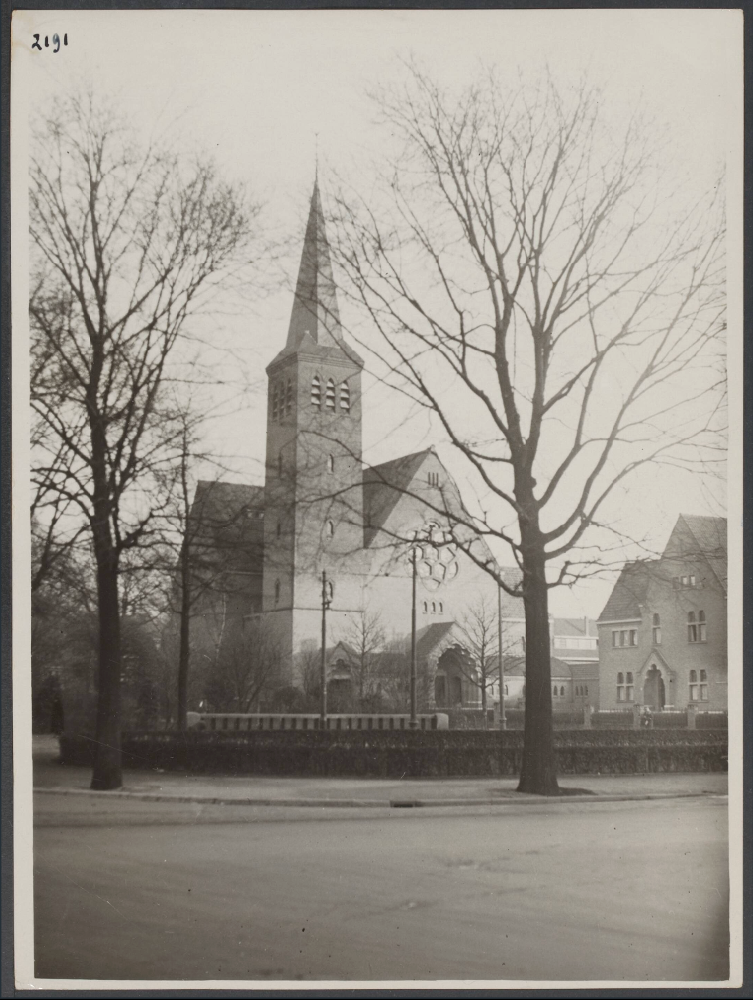
The Hague. Church of the HH Martyrs of Gorcum on the corner of Stadhouderslaan-Cornelis de Wittlaan, n. d.
Photo collection Spaarnestad Subjects
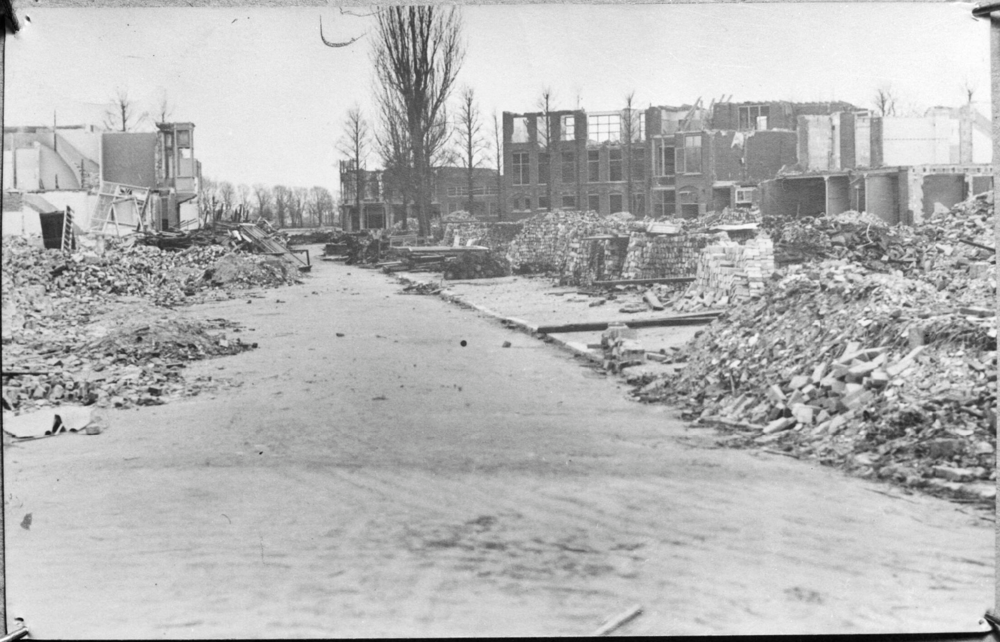
The Hague. Demolition for construction of the Atlantic Wall. Verhulststraat, 1943
Photo press agency Van den Heuvel
Photo collection Anefo
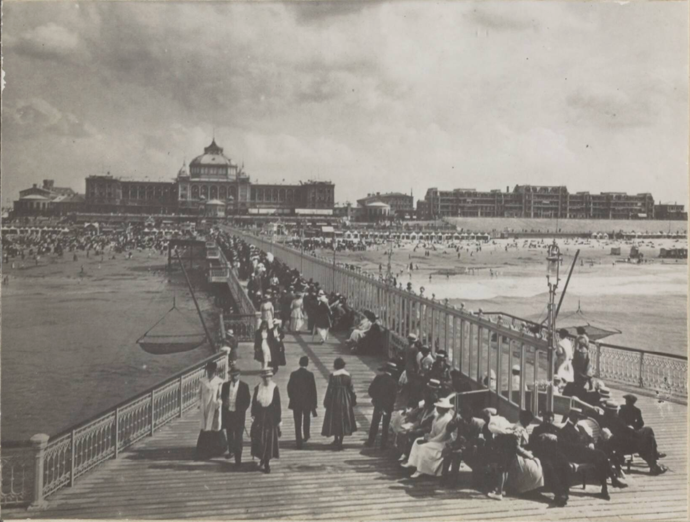
Scheveningen before the Second World War, n. d.
Photo collection Anefo
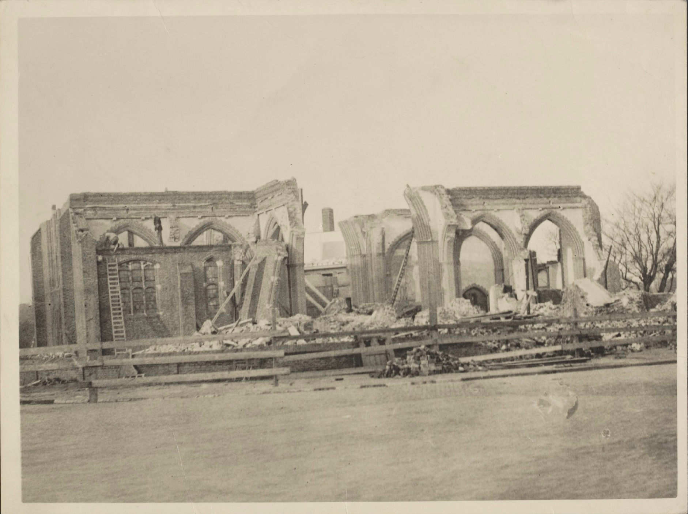
The Hague. Duinoord Church on the Adriaan. Goekooplaan
Demolished by order of the German occupier due to construction of the Atlantic Wall. 1943
Photocollection Spaarnestad Onderwerpen
Perhaps, the main purpose of the Atlantic Wall was not only the protection from the Allies, but a psychological
warfare and reinforcement of propaganda, also towards interior politics in Holland. In the beginning, the project
was called the «New West Wall», referring to the previous fortification system, The Siegfried Line (Westwall in
German), built in 1936-40 from Kleve to the town of Weil am Rhein in order to protect the Western flank
(MacDonald, Charles B. 1990). But quickly enough the title changed to the one known now (‘The Atlantic Wall: The
Remnants of Nazis on the Dutch Coast’. 2023). It was intended to convey a sense of strength and invincibility. By
associating the defensive structure with the vastness of the Atlantic Ocean, the Germans sought to create an image
of an impregnable defense that would discourage the enemy from invasion. “The fortress had important psychological
value, for it tended to unite the occupier and the occupied in the fear of being swept away; the fortress provided
unity and identity where there was none” (R. G. Nobécourt).
Ancient Greek mythology played an important role in the formation of racist Nazi ideology of white Aryan
superiority complex and intimidation. In his most famous and deeply contrioversial, troubling and prohibited work,
Mein Kampf, Adolf Hitler described the representatives of the ‘superior’ race, the Aryan, as “the PrometheusPrometheus, according to the mythological
genealogy, was the brother of Atlas (‘Prometheus | Description & Myth | Britannica’. n.d.)
of mankind” (Johann Chapoutot, 2016). The image of the Olympic gods and Prometheus specifically
was highly abused by the Reich regimeThe Reich post office, Reichspost, even issued a stamp with the profile of Prometheus holding
the torch before the Brandenburg Gate in 1938, to commemorate the fifth anniversary of the seizure of power.
(Johann Chapoutot. 2016)
. It was important to glorify the regime as much as possible using all means of propaganda,
especially referring to something so archetypical as Greek mythology which had a huge influence on the development
of European culture. Stereotypical images of highly masculine god-like men are deeply rooted in the European
collective consciousness as a representation of the highest power (Bartlett, Robert. 1994). However, the use of
the metaphor of the Titan punished for his arrogance and condemned to be eternally chained to a rock and daily
attacked by an eagle, seems to have foretold the short-lived existence of the fascist empire and its downfall.
Like Atlantis, the mythical island, “a confederation of great and marvelous power” (Plato, 360 B.C.), eventually
sank beneath the water, so too the bunkers of the Atlantic Wall, intended to embody strength and intimidation, are
gradually, piece by piece, sliding into the waves of the North Sea.
Defence Waterline
The Netherlands is a country built on a compromise with water. Always in danger of flooding, the Dutch learned to
subjugate inundation and use it for protection of their land, with great difficulty retrieved from the sea (Ronny
Vergouwe (Royal Haskoning DHV), 2016). This knowledge reached the best use in the construction of the Dutch Water
Defence Line, a massive defence system extending for more than 200km around the Netherlands designed to safeguard
the vital areas of the country (‘Dutch Water Defence Lines’. n.d. Hollandse Waterlinies. Accessed in December
2023).
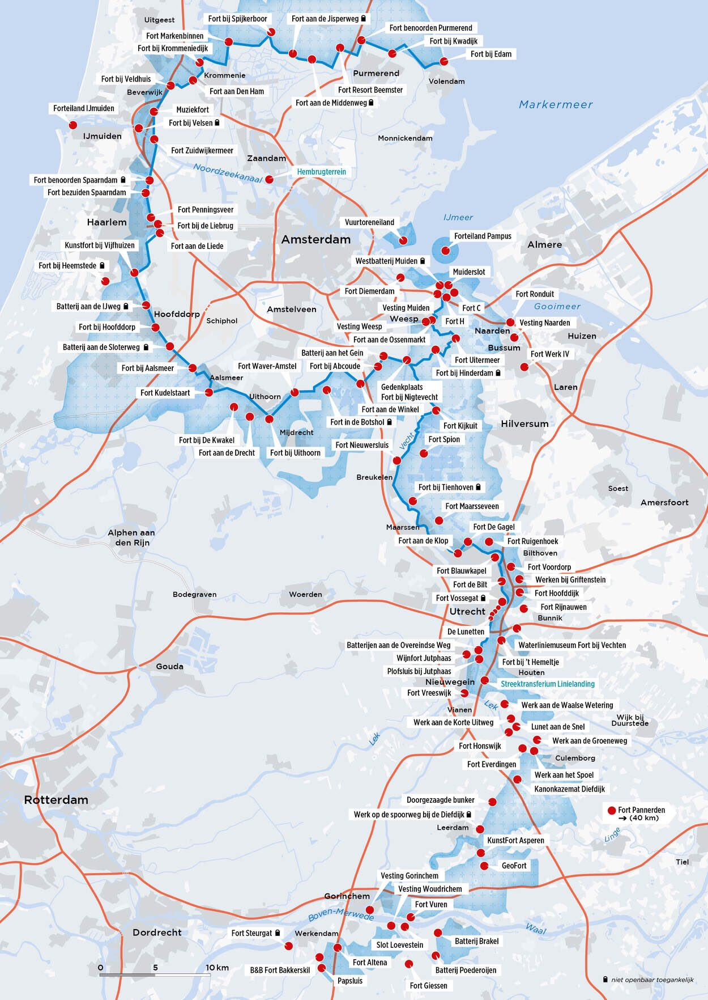
Dutch Water Defense Line map National government image
Laid in 1815, highly renovated from 1837 and finished around 1940, this structure becomes a great example of
subjugation of the landscape to warfare and controlled destruction. Artificial peninsulas shaped as a polygon with
pointed protrusions are spread around the country, barely noticeable from the ground but striking with their
precise geometry when viewed from above.
Before they used to be crucial parts of the military infrastructure, same as numerous dikes, special dug
reservoirs of a certain depth (exactly 40cm, deep enough to make enemy advance impossible, but shallow enough to
navigate by boat), and a complex system of canals which were supposed to bring water to the lowlands and flood
fields and villagesThis controlled inundation had a long-term consequences of not only making the advance
impossible for the enemy, but also prevented the farmers from cultivating land: salt from the sea water
dried the ground and made it infertile for 6 years after (Gert-Jan, 2024).
. By sacrificing chosen parts of the land, the Dutch tried to protect other areas. Before the
First World War, the canals in Amsterdam (Defence line of Amsterdam) were rebuilt in such a way that in case of
blockade of the city the preselected people could sustain themselves for a few months without the connection to
the outsideThe idea was that if all the defense
lines would fall to the enemy, the government and 1.000.000 preselected people (the elite, plumbers, bakers,
etc) were allowed to retreat in this area and be self-sustainable for 3 months (Gert-Jan, 2024).
. The only weakspot of this system was a dike controlling the access of fresh water to the city.
If it was captured by the enemy, the Netherlands would have to capitulate (Gert-Jan, 2024)I have learned this from Gert-Jan, a keeper of
the Kunstfort at Vijfhuizen. Kunstfort is an art museum established in one of the fortresses of the Dutch
Defence Waterline in 2005. I was able to participate in the tour Gert-Jan gave around the museum and
converse about the military heritage and meaning of the usage of fortifications in civil
purposes.
. Thus, water became an element fulfilling two fundamental human needs: quenching thirst and
providing protection.
Because of the unique application of the principal of temporary inundation in military defence system and use of
concrete as a building material for forts and bunkers (which never happened before on such a scale), the Dutch
Water Defence Line was added to the UNESCO heritage list (‘Dutch Water Defence Lines – UNESCO World Heritage
Centre’. n.d. Accessed in December 2023). However, the technology of building with concrete and steel instead of
stones and bricks was also used for the construction of the bleak double and, simultaneously, the opposite of the
Dutch Waterline – the Atlantic Wall (Ibid.). Erected by the enemy forces but serving the same purpose, holding
back the attack but of liberators' on the invaders. Both of them had a great ambition of an impossible absolute
protection of the state, despite the sacrifice of people and infrastructure, an indelible mark which it left on
the landscape; and both didn’t manage to unfold the inherit potential. The Dutch Waterline had barely held any
combat and been used as intended, it was completed, «but would never fulfill its intended function» (‘Art Fortress
near Vijfhuizen’. n.d. Accessed 2024).
In the end of WW2, the Germans occupied it and blew up the upper dikes to flood the territories and not let the
Allies to continue the attack, ruining the system and making it impossible to use ever again (Gert-Jan, 2024). By
turning what was meant to stop the German army into their weapon of defense, the whole idea of the Line was
perveted. As if having lost its meaning, it simultaneously lost its strategic significance, which over time, due
to the expansion of cities and an increase in population, became equal to zero. Nevertheless, sparse remains of
forts, bunkers and fortified towns are scattered across the land, phantoms of the war, forming a traumascapeA landscape, real or figurative, defined by the
traumatic events that have occurred there (Maria M. Tumarkin, 2005).
of the dark times under occupation (Maria M. Tumarkin, 2005).
The Dutch traumascape
In his book Bunker Archeology (1994), Paul Virilio explores how the war machine becomes an archetype of the
industrialisation. And indeed, if we look closely at the history of various industries, including food, economics,
clothing, technology, and especially urban planning, we can see that the crucial developments in all of them were
triggered by the necessity to attack the other or, on the contrary, to protect oneself (J. G. Crowther, 1947). The
major European cities are constantly in passive, suppressed anticipation of the start of a new war, and
governments do not loosen their grip on the development of military technology (Sabbagh, Dan. The Guardian, 26
January 2024). The bunkers still stand, somber and neglected, as if waiting for their time to come again.
The artificiality of the Dutch landscape seems to absorb memories, creating a sterile surface, presenting itself
as a blank canvas. Whether in the city, village, on the coast, or in a nature reserve, it is important to realise
that every square centimetre where your foot lands is someone’s private, or governmental, property (Wim Bonis,
2013).
The privatisation of nature, interference in natural processes, and total control of all territory lead to a
unique type of interaction with the surroundings (Klimaat, Ministerie van Economische Zaken en. 2011).
The environment entirely complies to infrastructure, becoming a sort of placeholder for human activity, setting a
specific algorithm for existence. The ideal Dutch landscape is created for maximum practicality and productivity,
devoid of any sentiments. Practicality makes the space conventional, normal, neutral. In the past century,
neutrality has been a fundamental Dutch principle in foreign politics, even nowadays a «neutral» standpoint is
maintained regarding certain conflictsE. g. The speech of the Dutch lawyer Rene Lefeber at the public hearing on the Legal
Consequences arising from the Policies and Practices of Israel in the Occupied Palestinian Territory,
including East Jerusalem at the International Court of Justice (ICJ) on the 20th of February 2024. His speech
mostly consisted of quotes from the International Law and Geneva conventions without applying them to the
concrete case of the Israeli-Palestinian conflict being considered in court. On the contrary, the arguments of
other representatives, such as Saudi Arabia, or Bangladesh, were full of examples of violent actions performed
by Israeli army towards the civilians in Gaza.
. Neutrality has no shades, no weight, no position. Powerless, instead of being protective, it can
become destructive to itself. The absence of a firm stance inviting other forces to fill its emptiness.
One example of space being consumed by trauma is the invasion of Holland by German troops during World War II.
Despite the occupation of the Netherlands being relatively mild, the trauma from it has left an indelible mark not
only on the collective consciousness but also on the landscape. The perfection of the system built over centuries
was rudely disrupted, and the consequences of active violent activity, lasting for just a few years, formed the
Dutch traumascape (Maria M. Tumarkin, 2005).
It is not liked to be talked about, not liked to be displayed. But the normalisation of trauma diminishes its
significance, ignoring its influence on life and the environment. Forgetting and neutralising lived experiences
make existence ephemeral, timeless, almost immaterial (Kundera, Milan, 1982). Each lived moment becomes similar to
another. Culture and personality become invisible. Forgetting leads to ignorance, not only towards the past but
also the present and the future.
Unlike the Netherlands, the theme of war memory in Germany is very much alive. Berlin, a city with a heavy
history, having gone through numerous destructions, rebuilds, divisions, and reunifications, is filled with ghosts
of the past. Every memorial plaque, every “stumbling stone”Stolpersteine (German) is a project initiated by the artist Gunter Demnig. He pays tribute to
the memory the victims of National Socialism by installing commemorative brass plaques in the pavement in
front of their last address (‘STOLPERSTEINE’. n.d. Accessed March 2024)
in the pavement, every bullet hole in the wall tells a story of pain, forming the memoryscape of
the city and filling it with new meanings.
Berlin has changed a lot since I have been there last, in 2019. Already than the effort to preserve the memory of
the war embodied in the city was very tangible, but now, after the outbreak of conflicts between Russia and
Ukraine, and Israel and Gaza, the commemoration of war was transformed by the context, acquiring a new meaning.
The city center is dotted with stickers with slogans in Arabic and Ukrainian, the flags are waving from the
houses, the remains of the Berlin Wall at the Checkpoint Charlie are covered with graffiti of Ukrainian soldiers
and political prisoners. The Ukrainian embassy stands right behind a huge bunkerNowadays it is known as Boros Bunker, a private
collection of contemporary art. The internal structure of the bunker has undergone big changes, since in the
last 79 years from the end of the war it was used as a warehouse for textiles, imported tropical fruits,
techno bunker and platform for sex parties, until it eventually got closed and later on purchased by Karen and
Christian Boros, art collectors (‘Boros Collection’. n.d.). Some walls are destroyed, and a part of the
ceiling has been taken out in order to expose the entrails of the bunker. Thus, the bunker cannot be used
again for its initial purpose.
from the time of the Second World War. Tempelhof AirportThe vast field on the Airport’s territory was used for testing
and developing military technology. After the war it was still used as center of Berlin Air Bridge. It was an
organised airlifting of food and fuel from Allied airbases in western Germany, a response to the Soviet
blockade of rail, road, and water access to Allied-controlled areas of Berlin. (‘Milestones: 1945–1952 -
Office of the Historian’. n.d. Accessed 1 March 2024). In 2008 it was turned into a huge park where citizens
could walk, have picnics, play sports, and create a sense of normal life, filling the empty damaged space with
new memories.
, one of the Reich’s grand projects, is used as a refugee camp from 2015, now hosting many
Ukrainians. Such collisions of traumas of the past and present expose the tragic intertwining of a never-ending
suffering, continuously taking new forms.
Hardcore Heritage
In Oostduinen, in The Hague, there is a peculiar place. It is located right at the transition from the city to
the dunes, behind the International Crime Court and Monument Bombardment Alexander BarracksThe WW2 monument. On May 10, 1940 around 04:00 in
the morning, the German air force bombed the Prince Alexander Military Barracks in The Hague. As a result, 66
hussars of the Cavalry where killed and over 150 soldiers and officers where injured (TracesOfWar.Com’. n.d.
Accessed February 2024).
. While cycling towards the picturesque nature site, one can notice a tall building of a weird
shape, surrounded by a fence with barbed wire, dozens of surveillance cameras and people patrolling the area.
Sometimes, an incomprehensible high-pitched sound comes from it, but most of the time sounds of gunfire and
barking dogs can be heard around. This building is NATO Communications and Information Agency. Standing on its own
in the middle of a nature site, towering above the dunes, it seems to not draw much attention. Obscure in its
purpose and form from the first sight, it somehow seems like an integral part of the landscape. People come here
to run, walk with their dogs or just have a routine stroll around without questioning too much what does the
landscape surrounding them holds within itself.
Just at the beginning of the running path, opposite to the NATO building, stands a wall on its own, detached from
anything, enclosed with a fence from one side. This is one of the remaining parts of the Atlantic Wall, disguised
between trees and bushes. Eventually, the wall abuts another fence with a VERBODEN TOEGANG sign on it; behind this
fence a military base locates, and a bit further in the dunes – a water pump.
Once walking around this site, I saw a woman taking picture of a monument to the victims of war,
Waalsdorpervlakte Bourdon Bell, located a little further from the Wall. It is a big bell standing on top of a
small hill, rising above a few other war memorials. The access to it is not allowed, the hill is surrounded by a
low fence with yet another VERBODEN TOEGANG sign. I approached the woman and asked her why is there a fence
forbidding people to come closer. She replied that it is here in order to prevent the acts of vandalism, probably,
but she still likes to come to this place. She said, she had a very difficult year, she lost her father, sister
and her dog, and it is a lot of losses to process. Her father served in the army, after the war, but he was still
connected to the military. And now, since he passed away, she often comes to this memorial site to cherish memory
of him. Through the collective grief of the fallen ones during the war, she is able to connect to her inner
mourning. When she was telling me this, she had tears in her eyes.
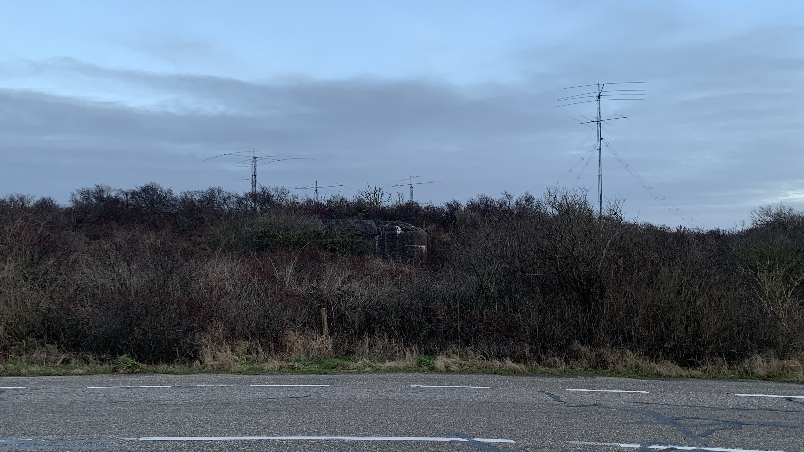
Personal archive, 2024
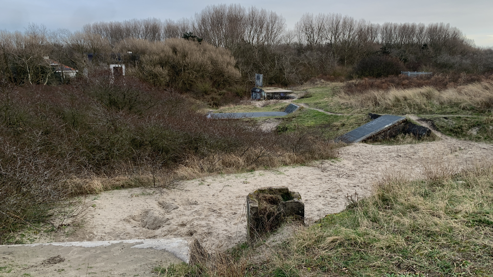
Most of the Atlantic Wall bunkers stand abandoned and forgotten, resting in-between spiky bushes, verdurous, or
buried under the layers of sand and earth. And yet, the access to them is closed. While visiting the bunkers near
Hoek van Holland, I, to my disappointment, discovered that the entrances are completely blocked by metal bars that
are impossible to climb over or crawl through. Ceiling-less parts of the bunkers are also closed with even finer
lattice. The doors of other ones are not only locked but also obstructed by cement blocks. On the inside, however,
the walls are fully covered with graffiti, there is trash thrown around everywhere, stray weeds are sprouting and
stale leaves are lying on the ground. So protected space of the bunkers was vandalised long before the
installation of the bars, but no one bothered to clean them, creating only the appearance of concern for the
unwanted, dark, violent historical heritage.
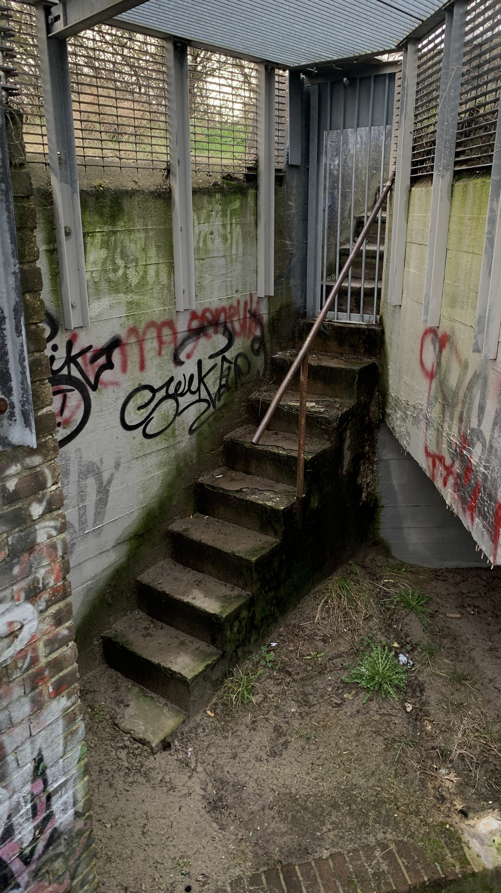
Personal archive, 2024
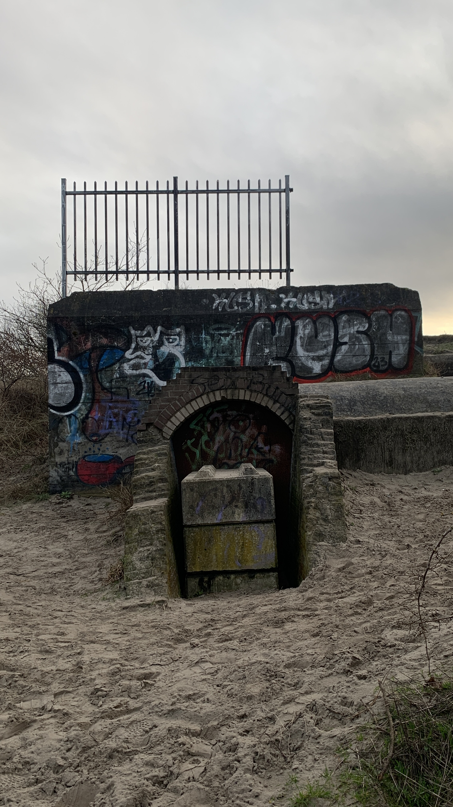
It is the same case with most of the other remains of the Atlantic Wall across the country. Damaged and
abandoned, they are nonetheless being “protected” by the government, fending off the opportunity of interested
people to visit and explore them. According to my research of comments on Google Maps under the bunker locations,
to most of them the access was prohibited around a year ago. People used to write how much they enjoyed playing
there as kids, or coming to explore alien looking constructions for curiosity and fun. However, nowadays one can
find much more disappointed comments about the fact that one cannot enter the bunkers any longer, and they usually
date a few months or a year ago.
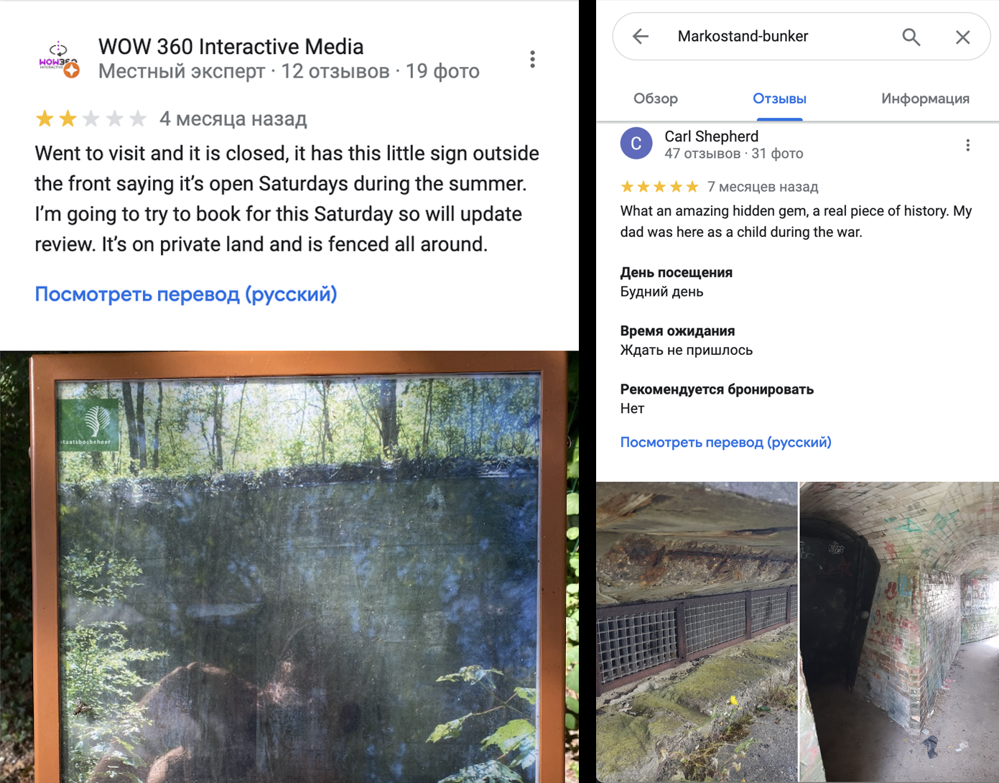
Screenshots from Google Maps, taken in 2024
Right after the war, people were eagerly taking advantage of the opportunity of using the bunkers freely.
Ignoring their intended function, they were enthralled by the absence of threat posed by these structures, which
soon enough would be demolished and stop disfiguring familiar neat landscape. People were sunbathing and painting
on them, turning them into holiday beach houses (P. Harff, D. Harff; 2011), taking happy photographs and resisting
the heaviness that the bunkers brought to the coastal dunes. Peaceful, life blossoming again was taking revenge
over static, oppressive remnants forever frozen in time.
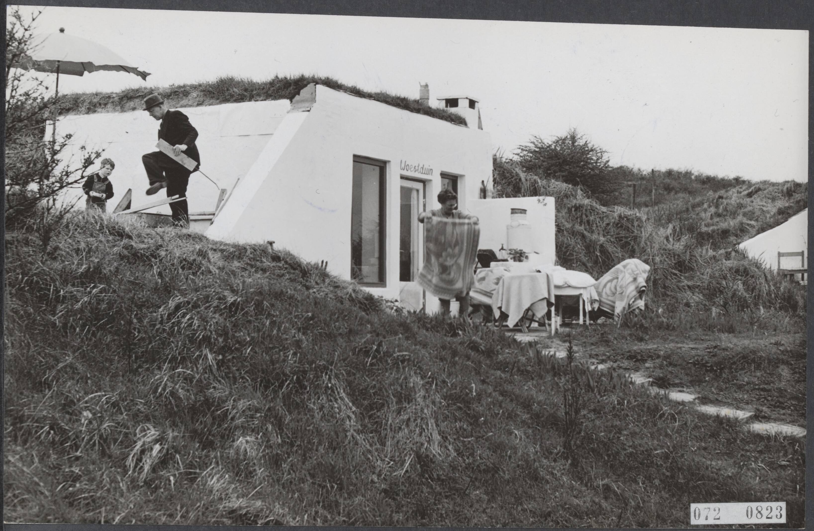
In the Zandvoort dunes, the existing bunkers of the Atlantikwal are currently inhabited as
summer and weekend accommodation. Cooking on a stove. 1955.05.06.
Photo collection Elsevier
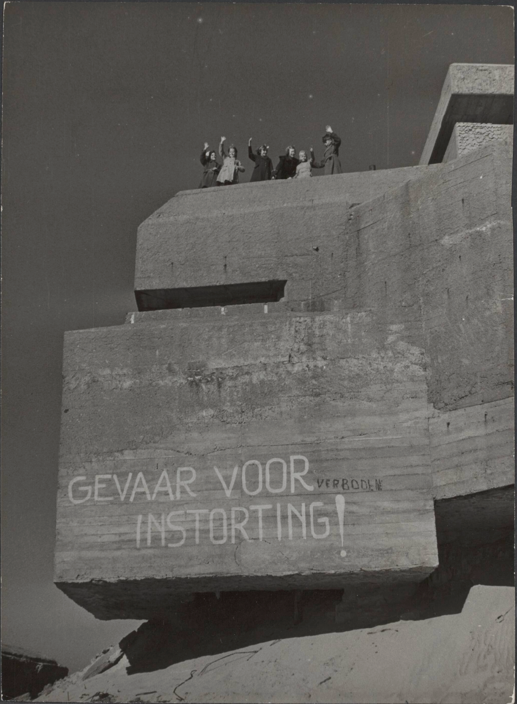
Remains of the Atlantic Wall in the dunes near a Dutch beach, n. d.
Photo collection Spaarnestad Subjects.
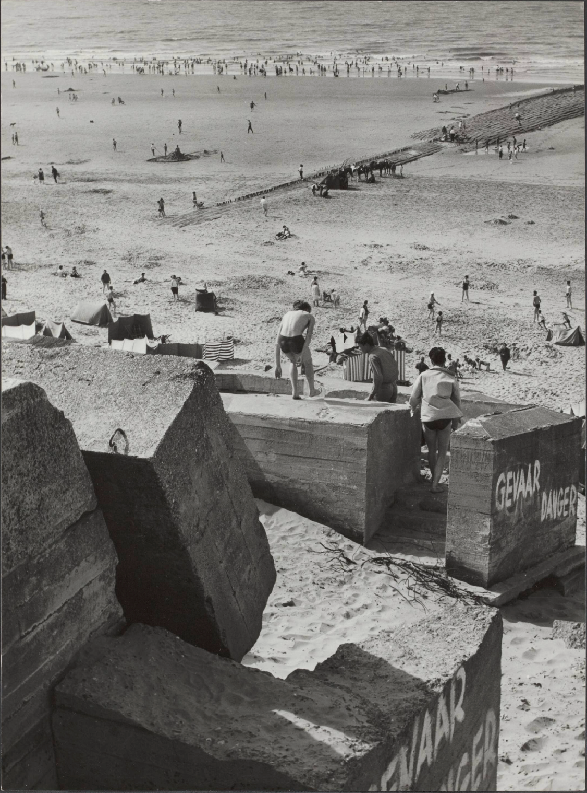
Later on, after the first emotional wave was gone, a lot of bunkers (those that were still left standing) were
acquired by private persons or companies. On the official Central Government Real Estate Agency (CGREA) website
(https://www.rijksvastgoedbedrijf.nl/) there is a case about
sales process of one of the biggest bunkers in The Hague to Data Protectors B.V. for € 350.000, in 2014
(‘Voormalige Hospitaalbunker, Van Ouwenlaan 11 Te Den Haag | Biedboek.Nl’. n.d. Accessed January 2024). The bunker
is supposed to be used as a “storage of goods and cultivation of consumer vegetables”, and it should not “attract
the public or traffic”, probably because it is located in a protected ecological zone (Ibid.)After the purchase, the actual function of the
bunker was unclear. Apparently, there was another company involved that was storing data in there, since the
concrete walls were so thin that hackers would not be able to damage it by using the magnet. More information
can be found in this article: ‘WOII-Bunker Op Haags Landgoed Moet Nu Een Datacentrum Gaan Beschermen’. 2019.
19 March 2019. https://omroepwest.nl/nieuws/3814067/woii-bunker-op-haags-landgoed-moet-nu-een-datacentrum-gaan-beschermen.
. Before the trade, this military construction was used by the Ministry of Defence as a command
center, for NATO exercises, and Eastern Bloc attack simulator during the Cold War, but then became a property of
CGREA (Ibid.).
However, the Atlantic Wall is not completely forgotten. In 2014, cultural heritage organisations from seven
Atlantic Wall countries – France, Belgium, the Netherlands, Germany, Denmark, Norway and the Channel Islands –
united into a partnership Atlantic Wall Europe (AWE) to process a “difficult heritage” of this memorial of war
(‘Over AWE’. n.d. Accessed February 2024). The activity of AWE did not last for very long, just 3 years from 2018
to 2021, but it did create more awareness amongst local history enthusiasts. Their work also was the beginning of
the Bunker Day in The Netherlands, an annual event during which most of the bunkers open up, and the visitors not
only get a chance to visit them but also to take part in the excursions and learn about the history (‘The Hague
Bunker Day | DenHaag.Com’. n.d. Accessed February 2024).
A more radical approach of dealing with remembering and forgetting can be found in many projects of RAAAF (RAAAF,
Rietveld Architecture Art. n.d. ‘RAAF’. Accessed December 2023). It is the Dutch studio working in the
intersection of experimental architecture, art and philosophy, and it is famous for their space interventions
questioning the habitual way of perceiving a familiar landscape (Ibid.). In one of their most famous works, Bunker
599, they sawed a bunker which was built as a part of New Dutch Waterline in half, taking out the central part of
it to expose the entrails of a seemingly solid indestructible body. By breaking through thick layers of concrete
and steel, they literally opened up the secrets of the bunker never meant to be shown, breaking the concept of it
and turning upside down the whole meaning of this construction. Before the intervention, it was just a disguised
part of the landscape, and after it was declared a national monument (Ibid.) Interestingly enough, none of the
parts of the Atlantic Wall were included in UNESCO heritage list. Preservation of the heritage of the enemy, no
matter how technically advanced and architecturally important it is, contradicts the basic need of the human
psyche to forget heavy memories.
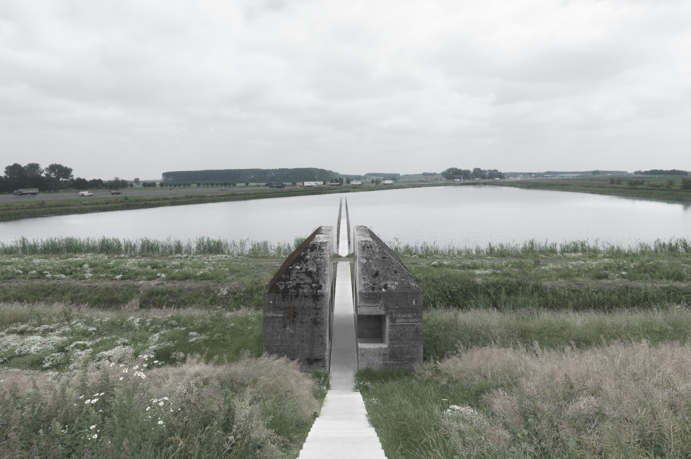
Bunker 599, RAAAF
Photography: Allard Bovenberg
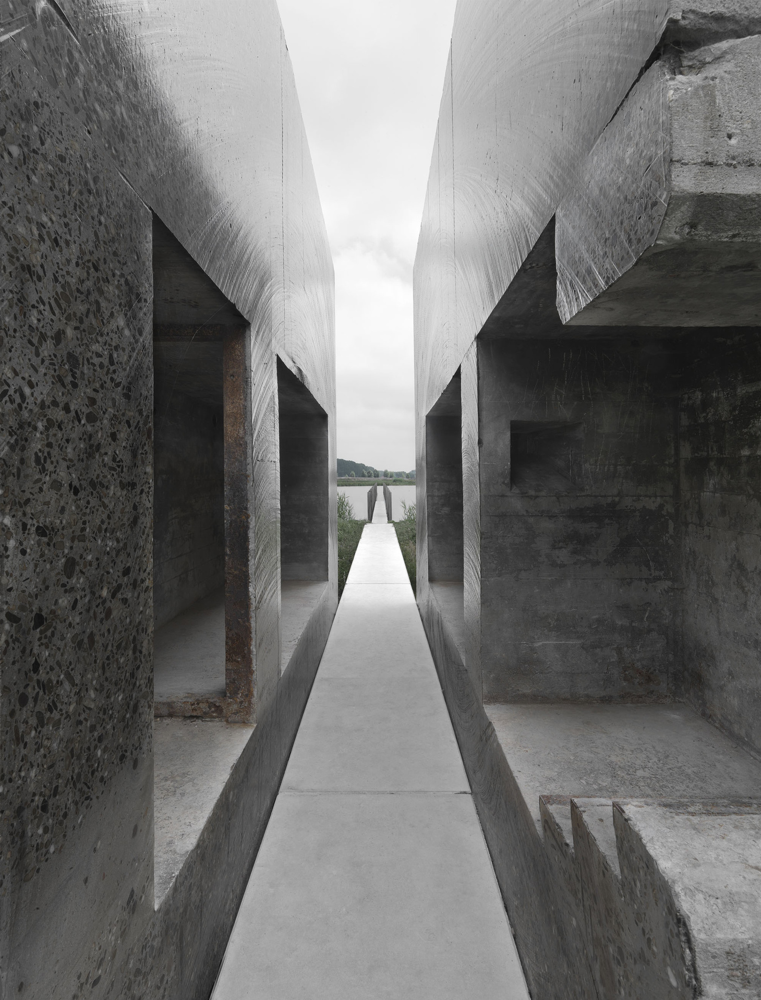
Conclusion
Living in The Hague, the legal capital of the world, "the city of peace and justice" (Surlinio. n.d. ‘De
Stichting | Atlantikwall Museum Den Haag’. Accessed February 2024), for almost 4 years now and observing the
politics of The Netherlands regarding the recent wars made me question the fairness of these titles (‘POLITICO’,
2024). Why does the country that is supposed to play such an important role in resolving international military
conflicts take such a big distance from its own uncomfortable past, as if it doesn’t matter, as if it didn’t leave
any significant trace?
Experiencing a long-distance connection to the war that my country started with another, I cannot help but try to
find the reflections of it here, in the Netherlands. It makes me wonder how a place can be so disconnected from
reality, and how come the presence of war, physical or intangible, became the only signifier of "the reality" for
me.
"The heavier the burden, the closer our lives come to the earth, the more real and truthful they become.
Conversely, the absolute absence of a burden causes man to be lighter than air, to soar into the heights, take
leave of the earth and his earthly being, and become only half real, his movements as free as they are
insignificant." (Kundera, Milan, 1982)
In the heaviness of the Atlantic Wall bunkers, I finally found a place filled with the same pain as mine. I found
a place of power. A place of memory.
Bibliography
Affordances, R. L., RAAAF, Rietveld Architecture Art. (n.d.). RAAF. Retrieved 2 March 2024, from
https://www.raaaf.nl/nl/
AFP. (2017, July 30). The remains of the Nazis’ ‘Atlantic Wall’ defences are being used to lure tourists to Holland.
TheJournal.Ie. https://www.thejournal.ie/world-war-ii-bunkers-the-hague-3513622- Jul2017/
Art fortress near Vijfhuizen. (n.d.). Retrieved 29 February 2024, from
https://www.kunstfort.nl/nl/informatie/over/over-kunstfort/
Boros Collection. (n.d.). Retrieved 1 March 2024, from https://www.sammlung-boros.de/en/
Bunkers: For when the bomb falls—Alkmaar Regional Archives. (n.d.). Retrieved 4 March 2024, from
https://www.regionaalarchiefalkmaar.nl/verdieping/blog/98-bunkers
Bunkers in a residential area. (n.d.). Retrieved 4 March 2024, from
http://www.wittebrugpark.nl/wittebrugpark/bunkers/bunkers-IKS.htm
Centre, U. W. H. (n.d.). Dutch Water Defence Lines. UNESCO World Heritage Centre. Retrieved 29 February 2024, from
https://whc.unesco.org/en/list/759/
Court orders Dutch to stop shipping F-35 parts to Israel. (2024, February 12). POLITICO.
https://www.politico.eu/article/court-orders-dutch-stop-shipping-f-35-israel-gaza/
Domestic Politics and Neutrality (The Netherlands) | International Encyclopedia of the First World War (WW1).
(n.d.). Retrieved 28 February 2024, from https://encyclopedia.1914-1918-
online.net/article/domestic_politics_and_neutrality_the_netherlands
Dutch dust off Nazi bunkers for tourism – DW – 07/26/2017. (n.d.). Retrieved 2 March 2024, from
https://www.dw.com/en/dutch-dust-off-nazi-bunkers-for-tourism/a-39822959
Dutch Water Defence Lines. (n.d.). Hollandse Waterlinies. Retrieved 29 February 2024, from
https://www.hollandsewaterlinies.nl/en
Dutch Water Defence Lines—UNESCO World Heritage Centre. (n.d.). Retrieved 29 February 2024, from
https://whc.unesco.org/en/list/759/
Geschiedenis van Zuid-Holland. (n.d.). Erfgoedhuis Zuid-Holland. Retrieved 2 March 2024, from
https://geschiedenisvanzuidholland.nl/
Hikmet, M. (2022, April 22). No bunkers or air raid shelters in the Netherlands.
https://pitane.blue/en/2022/04/22/no-bunkers-or-hiding-places-in-the-Netherlands/
History of the Atlantic Wall—Erfgoedhuis Zuid-Holland. (n.d.). Retrieved 28 February 2024, from
https://geschiedenisvanzuidholland.nl/verhalen/verhalen/history-of-the-atlantic-wall/
Home: Places: Region: POI :: Atlantic Wall. (n.d.). Retrieved 2 March 2024, from
http://atlantikwallplatform.eu/en/home/country/places/region/poi?poi_id=216
Klimaat, M. van E. Z. en. (2011, December 8). Policy on nature and biodiversity—Nature and
biodiversity—Government.nl [Onderwerp]. Ministerie van Algemene Zaken.
https://www.government.nl/topics/nature-and-biodiversity/policy-on-nature-and-biodiversity
Kundera, M. (n.d.). The Unbearable Lightness of Being.
MacDonald, C. B. (1990). The Siegfried Line Campaign: Table of Contents.
https://www.history.army.mil/books/wwii/Siegfried/Siegfried%20Line/siegfried-fm.htm
Memorial Bombardment Alexanderkazarne 10 May 1940—Den Haag—TracesOfWar.com. (n.d.). Retrieved 2 March 2024, from
https://www.tracesofwar.com/sights/103534/Memorial-Bombardment- Alexanderkazarne-10-May-1940.htm
Milestones: 1945–1952—Office of the Historian. (n.d.). Retrieved 1 March 2024, from
https://history.state.gov/milestones/1945-1952/berlin-airlift
Over AWE. (n.d.). Atlantikwall Europe. Retrieved 2 March 2024, from
https://www.atlantikwalleurope.eu/nl/page/about-awe
Prometheus | Description & Myth | Britannica. (n.d.). Retrieved 2 March 2024, from
https://web.archive.org/web/20200910142547/https://www.britannica.com/topic/Prometheus- Greek-god
Refugee crisis: Europe’s borders unravelling as Austria and Slovakia impose frontier controls. (2015, September 14).
The Telegraph. https://www.telegraph.co.uk/news/worldnews/europe/eu/11863246/Refugee-crisis-EU-ministers-
Germany-border-control-Austria-army-live.html
Sabbagh, D., Defence, D. S., & editor, security. (2024, January 26). Why are European defence leaders talking about
war? The Guardian. https://www.theguardian.com/uk-news/2024/jan/26/why-
are-european-defence-leaders-talking-about-war
Sande, B. van der. (n.d.). 2030: War Zone Amsterdam. Online Open. Retrieved 29 February 2024, from
https://onlineopen.org/2030-war-zone-amsterdam-essay
Sontag, S. (n.d.). Regarding the pain of others.
STOLPERSTEINE: HOME. (n.d.). Retrieved 1 March 2024, from https://www.stolpersteine.eu/en/home
Surlinio. (n.d.). De Stichting | Atlantikwall Museum Den Haag. Retrieved 4 March 2024, from
https://www.atlantikwallmuseum.nl/
The Atlantic Wall: The remnants of Nazis on the Dutch coast. (2023, May 31). Https://Dutchreview.Com/.
https://dutchreview.com/culture/the-atlantic-wall-remnants-of-nazis-in- the-netherlands/
The Hague Bunker Day | DenHaag.com. (n.d.). Retrieved 2 March 2024, from
https://denhaag.com/en/calendar/the-hague-bunker-day
The long echo of WW2 trauma. (2019, June 7). BBC News. https://www.bbc.com/news/stories- 48528841
Virilio, P., & Virilio, P. (2009). Bunker archeology (2. pr). Princeton Architectural Press.
Voormalige hospitaalbunker, Van Ouwenlaan 11 te Den Haag | Biedboek.nl. (n.d.). Retrieved 2 March 2024, from
https://www.biedboek.nl/nl/realestate/view/55/van-ouwenlaan-11-te-den-haag
Who owns the land? (2013, April 24). https://www.leidenlawblog.nl/articles/who-owns-the-land
WOII-Bunker op Haags landgoed moet nu een datacentrum gaan beschermen. (2019, March 19).
https://omroepwest.nl/nieuws/3814067/woii-bunker-op-haags-landgoed-moet-nu-een-datacentrum- gaan-beschermen
Yehuda, R., & Lehrner, A. (2018). Intergenerational transmission of trauma effects: Putative role of epigenetic
mechanisms. World Psychiatry, 17(3), 243–257. https://doi.org/10.1002/wps.20568
Милитаризм как решение всех российских проблем – DW – 21.03.2019. (n.d.). Retrieved 28 February 2024, from
https://www.dw.com/ru/%D0%BA%D0%BE%D0%BC%D0%BC%D0%B5%D0%BD%D1%82%D0 %B0%D1%80%D0%B8%D0%B9-
%D0%BC%D0%B8%D0%BB%D0%B8%D1%82%D0%B0%D1%80%D0%B8%D0%B7%D0%BC-
%D0%BA%D0%B0%D0%BA-%D1%80%D0%B5%D1%88%D0%B5%D0%BD%D0%B8%D0%B5- %D0%B2%D1%81%D0%B5%D1%85-
%D1%80%D0%BE%D1%81%D1%81%D0%B8%D0%B9%D1%81%D0%BA%D0%B8%D1%85-
%D0%BF%D1%80%D0%BE%D0%B1%D0%BB%D0%B5%D0%BC/a-47986343
Acknowledgements
My immense gratitude to Füsun Türetken and Katerina Sidorova for their guidance, care, and beautiful
conversations we had;
Dans Jirgensons for support and trust in my ideas;
Wojciech Kacper Werkowicz for bringing
order to my process;
Xaver Könneker for introducing me to Kunstfort museum and the wonderful people working there;
Gert-Jan for sharing his incredible knowledge;
and everyone who was there for me, you know who you are.